– Diciplines –
Beyond just programming, Parkour Tag as a project has encompassed many of the artistic disciplines that I love, including visual art, music creation, and video editing.
I think the thing that best shows how these mediums intersect is the trailer I made in December of 2022 to announce the next version of PKT that I had been working on in secret.
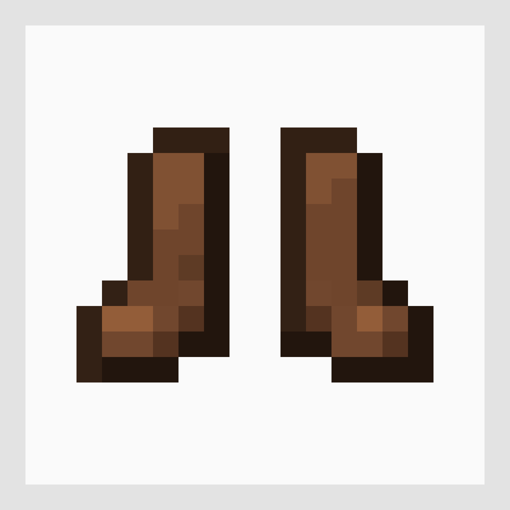
Default
The basic game is played between two teams, Hunters and Runners. The goal for Hunters is to catch all Runners, while the Runners' objective is to stay alive until a (configurable) time limit is reached. Hunters can eliminate any Runner with a single melee attack, so Runners have to cooperate using time-limited highlight items that make Hunters visible through walls to plan their movement routes.
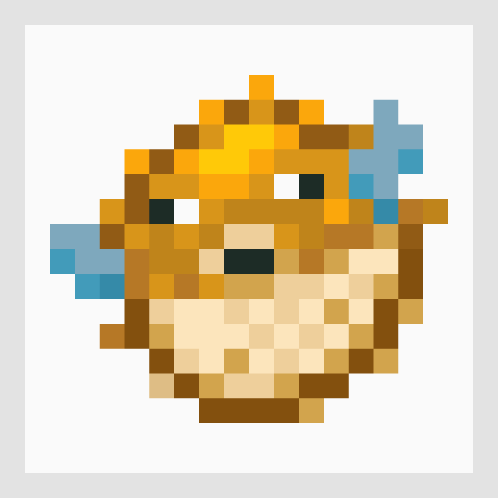
Fishing Frenzy
A simple varient that adds some flavor to the base game, Fishing Frenzy sees Hunters get a fishing rod to interrupt Runner movement during tight chases, while Runners get a fish with the knockback enchantment to punch Hunters away at the risk of getting within melee range, and to hit other Runners out of (or into) danger. It's a small adjustment, but makes the game drastically sillier due to the new shenaniganary possible.
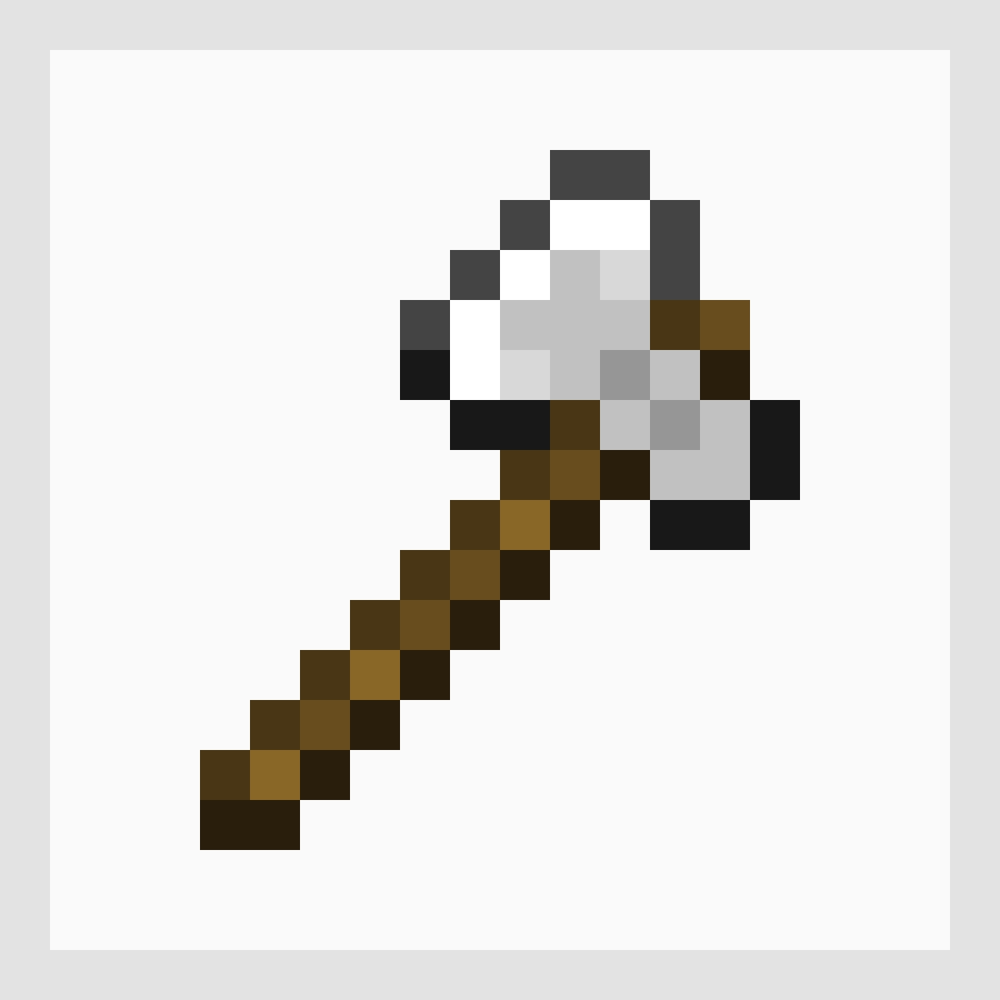
Battle
A simple combat gamemode, Battle pits two teams of players against each other with the same kits of gear. Optional settings include turning fall damage on and off as well as individually changing the primary, secondary, and utility weapons between several options.
Modifier Mixup
This gamemode applies a random temporary modifier to the game every seconds, like a chaos mod. Modifiers include reduced gravity, sudden aggravated goats, utility consumables, and unexpected team swaps, among others. Despite their chaotic nature, each modifier is balanced to give both teams a roughly equal advantage/disadvantage. The team switch modifier in particular is gamemode-defining – knowing that at any time your role can be flipped disincentivizes grouping up and leads to lots of hilarious sudden panic and exciting clutch wins.
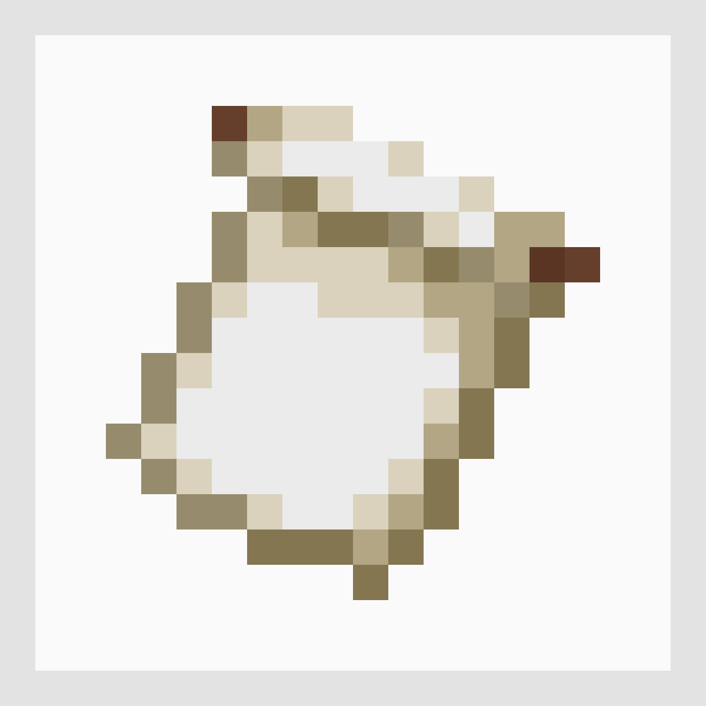
Flagmen
In this gamemode, players tag each other to steal a flag back and forth. The team with the flag constantly fills up a shared zero-sum progress bar (meaning the other team will need to undo that progress before making their own), and if they reach its end, they win. Tactically, there's a lot of depth in timing and angling your hits so that the flagbearer can't immediately retaliate – hitting them into a wall or waiting until they commit to a jump can be the difference between winning and losing in the long run.
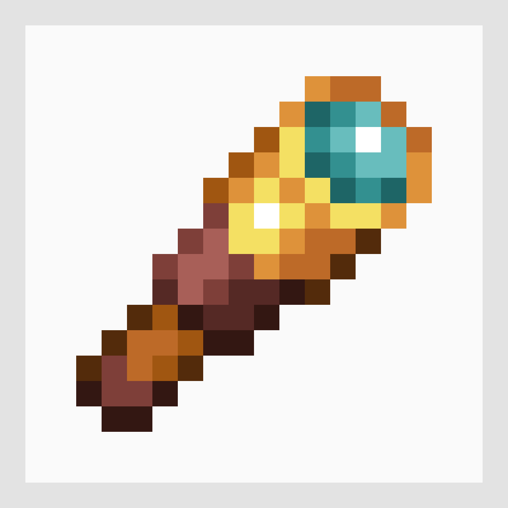
Spyshot
This gamemode is my proudest work of asymmetrical game design to date. In Spyshot, In addition to their one-shotting melee attacks, Hunters gain a cooldown-based temporary invisibility power. To balance that, Runners are equipped with effectively a gun, which shoots an instant-kill raycast on a long cooldown. In trying to get close to their Runner targets, Hunters must sneakily move between spots of cover, while Runners are constantly seeking safer ground and listening closely for the footsteps and distinctive cloaking sounds of any nearby Hunters. This makes for an incredibly tense game, in which paranoid Runners keep their heads on a swivel and Hunters plan diverse and unexpected routes to get from point A to point B. The base Minecraft mechanics of movement speed add a layer to this stealth focus, with Hunters having to choose between sprinting (which creates visible particles and sound), walking (which creates sound), and sneaking (which does neither). Overall, this gamemode is my personal favorite because of the suspense it creates.
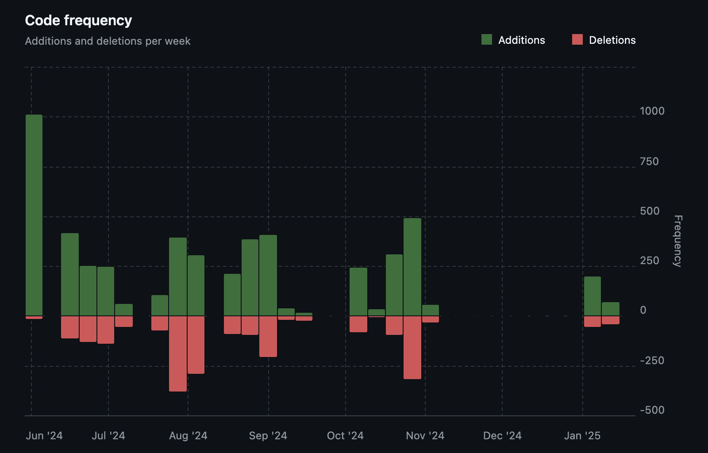
– Organization –
In order to better manage and keep track of Parkour Tag progress, I started a private Trello board as a TODO list and taught myself to use Github for version control.
Developing a Github workflow was a particularly helpful skill, not just for PKT development, but for other projects as well.
Here's my PKT commit history!— Community —
Since Parkour Tag is a small game designed for my friends to play, said friends act as my playtesters, offering a lot of helpful feedback and good ideas for me to implement.
My friend group's Discord server has a forum channel specifically for PKT bug reports and miscellaneous suggestions, as well as a channel I use to post changelogs for each update and blog-like accounts of programming challenges I run into.
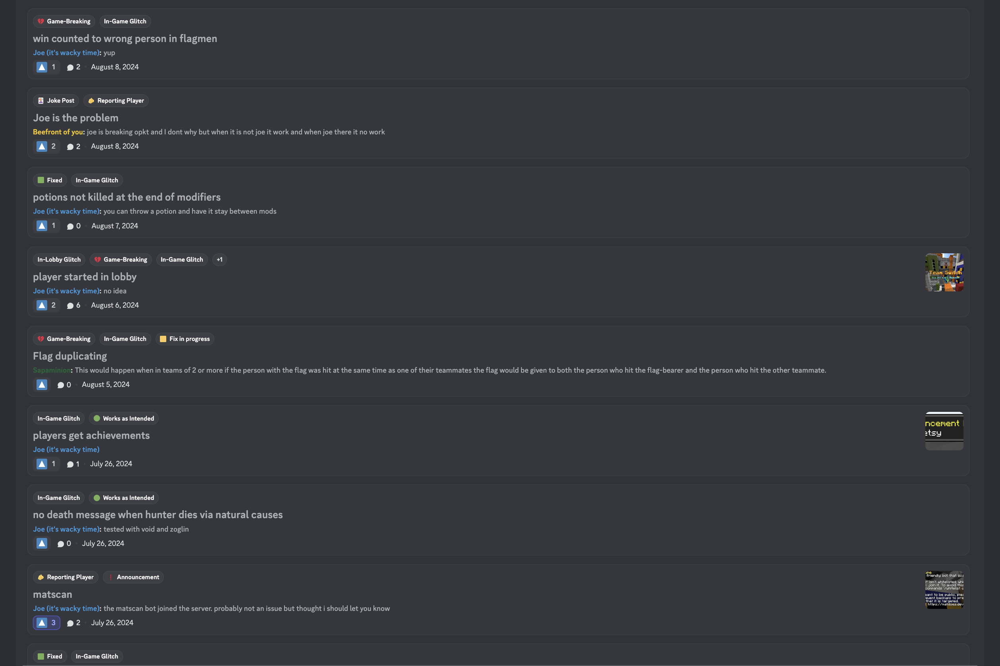
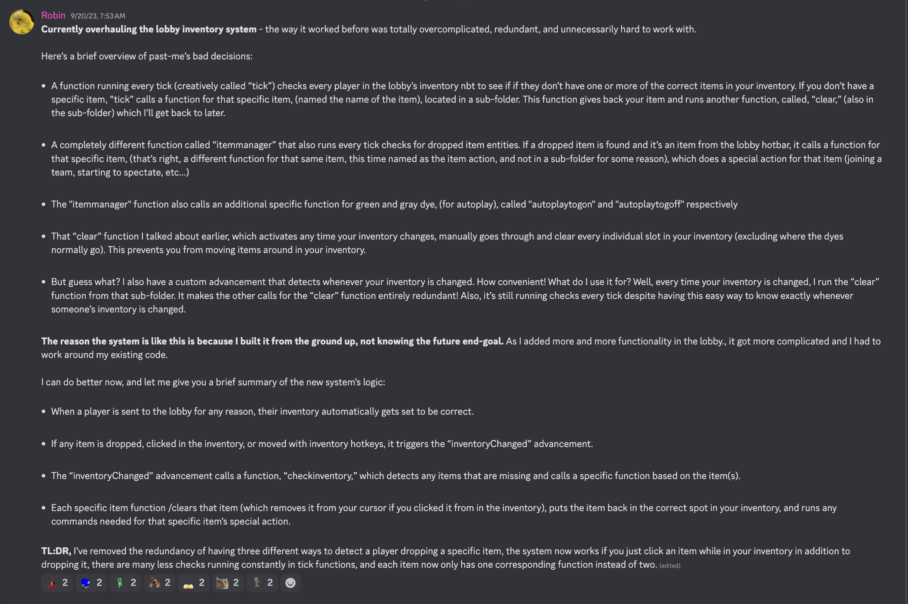
— Bonus Blog Posts —
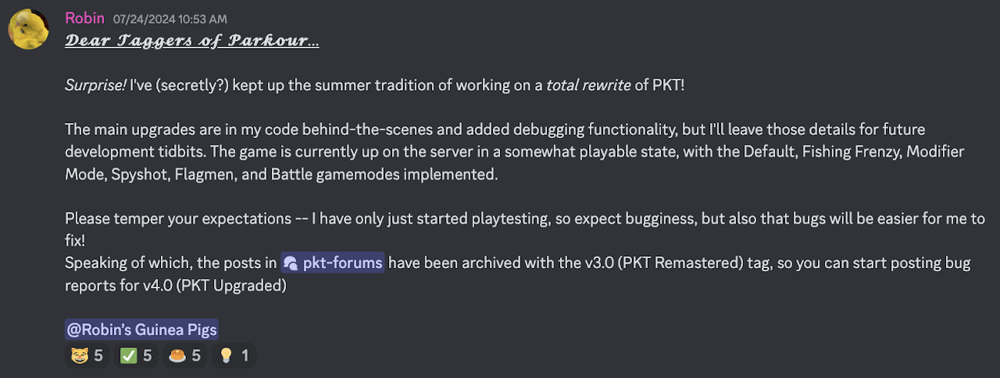
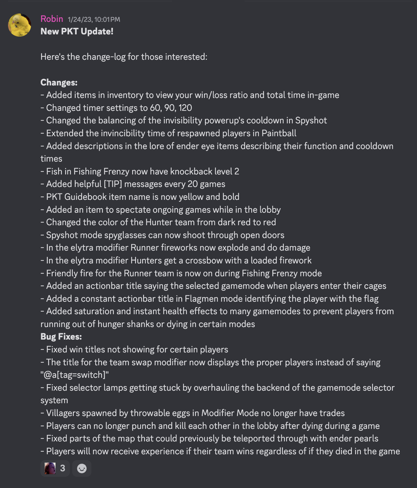
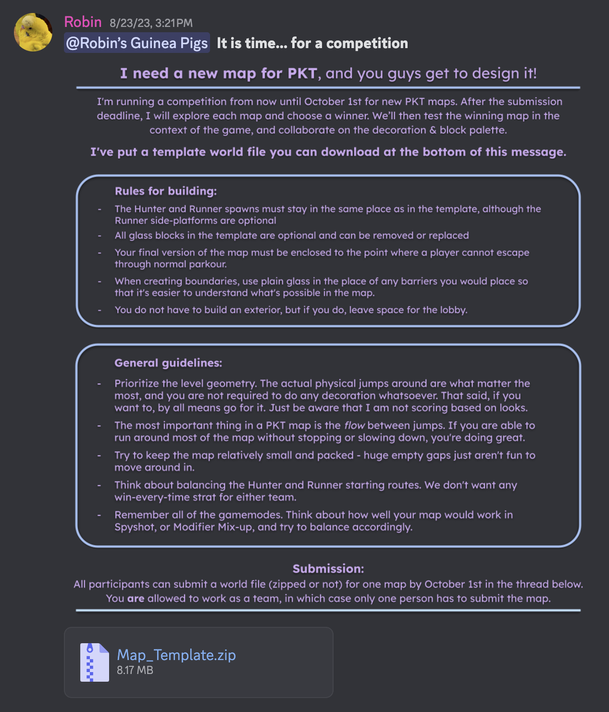
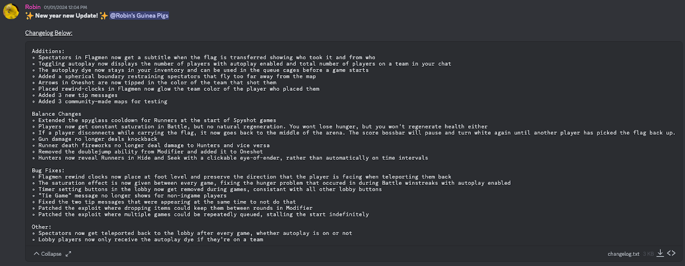
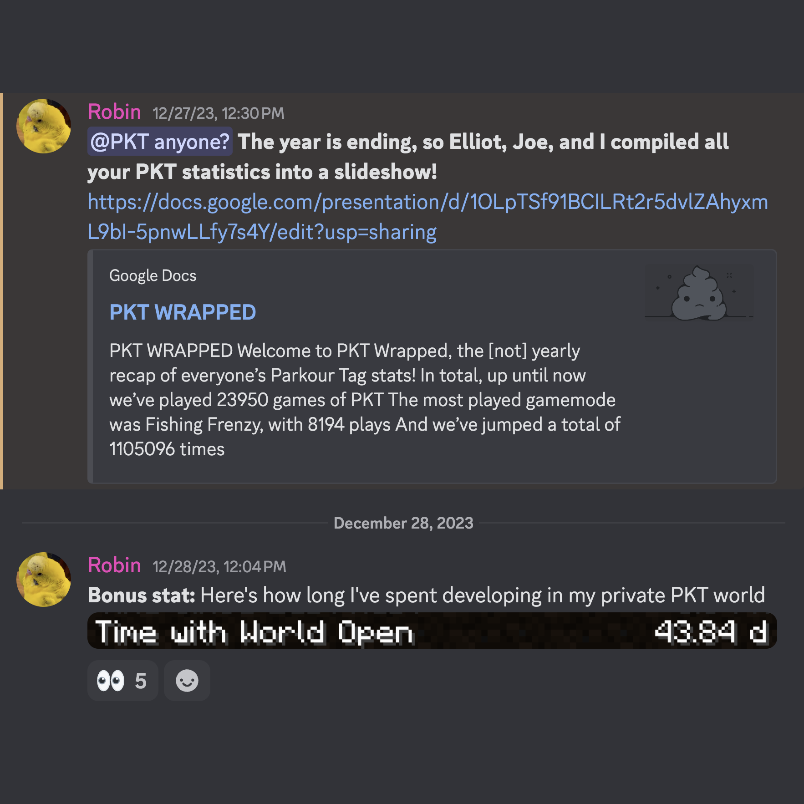